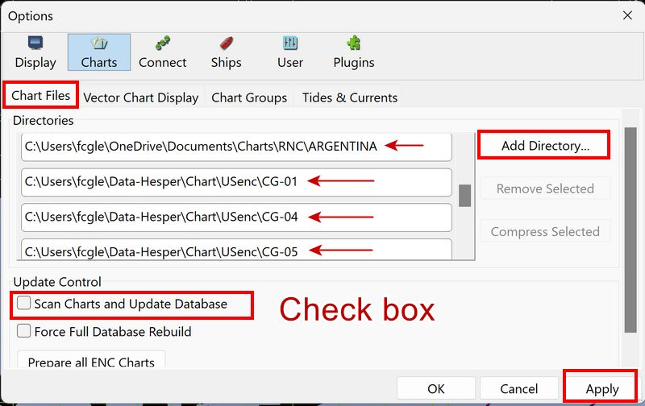
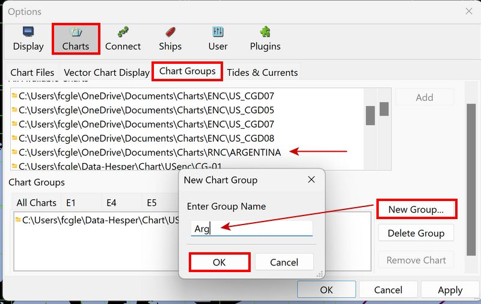
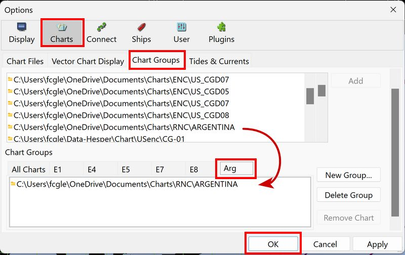
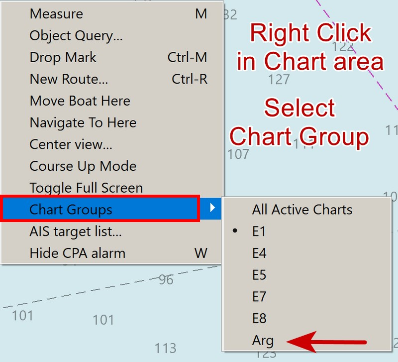
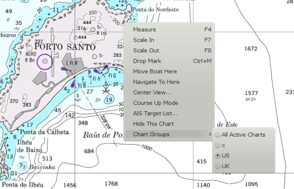
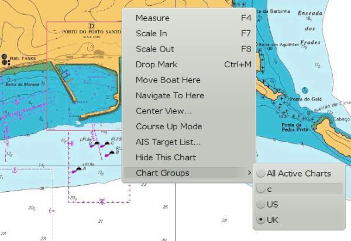

Chart Groups
First, if new charts need to be added, refer to Quick Start > Chart Installation or Chart Downloader
Under Toolbar > Options > Charts > Chart Files select Add Directory to add new "Chart Directories" as needed to create "Chart Groups". Enter chart directories for each Chart "set" that you want to "Group" together.

Select Scan Charts and Update Database. Wait for the update to
finish.
Then select Toolbar > Options > Charts > Chart Groups
You will see two panes. The top pane contains "All Available Charts", which are the charts you have installed. The bottom pane allows you to create, edit, and delete Groups.
Note that there is always an "All Charts" group. This Group is not editable.
New Groups which you create may have chart directories or individual charts added to them by selecting the item in the top pane and touching the "Add" button.
Also displaying MBTiles maps of a certain category is possible. For example, grouping aatellite images, is possible only if the MBTile files are collected in one folder or directory, and the directory is added to "Chart Files" and the a "New Group" named "Sat Images" is created using the directory.
From Toolbar > Options > Charts > Chart Groups select New Group. Now, directories of charts or individual chart file(s) can be added to the chart group(s). New Group Arg is being added for Argentina Charts.

Next from the top pane select the Argentina file directory and Add to the new Chart Group.

You may also remove individual charts or directories from Groups by selecting the desired item in the bottom pane, and touch "Remove Chart". Note that "removing" an item from the Group does not remove it from your "Available" set of charts. The item is simply made unavailable when the Group is in use.
It is a good idea to create an Empty chart group, only the background Map will be shown and "Unlimited" zooming is allowed. This can be useful for very large scale plotting, for example.
Chart Groups solve the following problem
You may have many charts loaded in your active database. Some of them have overlapping coverage at the same scale, so that when quilted, the logic does not know which of potentially several charts at the same scale to choose from. Some examples:
-
In the Bahamas there are a few publishers of charts, covering the same areas, with radically different presentations. Sometimes you may want to see one set (say planning charts of small scale), and other times you only want navigation charts of the best scale possible.
-
Leave a Group empty, in which case only the background chart will be displayed, very useful sometimes.
-
Pilot charts as one Group, normal navigation charts as another Group, makes it possible to quickly switch between them.
-
You have both Raster and Vector charts of the same area and want to be able to display each type separately, and switch quickly between them.
-
In another universe, NGA charts in one group, standard NOAA RNCs in another, standard NOAA ENCs in another group, British UKHO in a third group or even a group with both ENC and RNC of a particular USCG District.
-
The Chart Group function allows us to define multiple Groups, with different chart directories in each group. The Group desired for viewing may be selected quickly, through the right-click menu, without adding or deleting charts from the Active database.
If there are no chart directories listed under All available charts you will not be able to "Add" Chart Groups. A newly added chart directory (also called a folder) cannot be added to a Chart Group unless the Chart Database has been Updated .
Use Chart Groups

From version 4.8.0 above, it’s possible to quickly change between the first 10 listed chart groups. The// numerical keys// 0,1,2……..9 correspond to the Chart Groups 1,2,3…..10 (whatever their name is). For Example: Just press "4" and the display changes to show Chart Group #4 provided it exists. Note that group "0" always contains the "All Charts" Chart group.

In this illustration the navigator generally uses the US charts, when available. Coming into Baia do Porto Santo a detailed chart would be great, but no such US chart is available on board. A switch to the UK chart group solves the problem.

Select the Group you want to use, by a right-click context menu item called "Chart Groups". As you switch Groups the logic tries to select a chart and scale that closely matches the situation present before the switch. As you may understand, sometimes the fit is not reasonable, so the resulting view may be surprising.
Finally, if you have no Groups defined, as in the default installation, all installed charts are always available.
Chart Groups and Chart Files
Improve Display Speed and program response
For very large chart sets of charts, the display speed, program response and access and use of the charts is improved by judicious use of Chart Files directories and Chart Groups.
-
In Chart Files, rather than setting a single path (eg: c:\charts) to the "charts" folder, set multiple paths to sub folders (eg: c:\charts\enc\uscg01, c:\charts\enc\uscg07, etc).
-
Then assign a new Chart Group to each of those folders. You can then select the appropriate chart group with a right click and hovering over "Chart Groups" and selecting the chart group needed.
In chart_files don’t include the root chart directory c:/charts in the list!
c:/users/Dave/Documents/charts/ENC/GC01/ c:/users/Dave/Documents/charts/ENC/GC05/ c:/users/Dave/Documents/charts/ENC/NewZealand c:/users/Dave/Documents/charts/RNC/GC01/ c:/users/Dave/Documents/charts/RNC/GC05/ c:/users/Dave/Documents/charts/RNC/NewZealand c:/users/Dave/Documents/charts/BSB/Canada/ c:/users/Dave/Documents/mbtiles/NewZealand <---MBtiles Files c:/users/Dave/Documents/sat/NewZealand <---Satellite Files c:/users/Dave/Documents/kap/NewZealand <---Weatherfax Files
e01 c:/users/Dave/Documents/charts/ENC/GC01/ e05 c:/users/Dave/Documents/charts/ENC/GC05/ eNZ c:/users/Dave/Documents/charts/ENC/NewZealand r01 c:/users/Dave/Documents/charts/RNC/GC01/ r02 c:/users/Dave/Documents/charts/RNC/GC05/ rNZ c:/users/Dave/Documents/charts/RNC/NewZealand rCan c:/users/Dave/Documents/charts/BSB/Canada/ mbNZ c:/users/Dave/Documents/mbtiles/NewZealand <--MBtiles Files msNZ c:/users/Dave/Documents/sat/NewZealand <---Satellite Files kapNZ c:/users/Dave/Documents/kap/NewZealand <---Weatherfax Files
Example only, does not conform to chart_downloader defaults. Generally use the Chart Downloader Tab defaults when available.
Alternatively, you can put the mbtiles in with your favorite charts and use mbtiles show/hide with the chart_bar
See the advantage of Using Chart Groups above.
Chart Groups and CM93

Please Refer to chart_bar.
It is possible to have multiple instances of CM93v2 in different Chart Groups. Above we have 5 instances loaded in various chart groups. The view is of "All Active Charts".
OpenCPN also supports multiple partial CM93 data sets.
The instances are loaded, from left to right, in the order of the chart groups.
In this situation, only the leftmost instance of CM93, that is not excluded from the quilt, will be displayed. Above, it is the instance represented by the yellow rectangle.
FAQ Chart Groups
"No method to add charts to the group."?
Select the chart folder listed in the top pane. Touch "Add" to add this folder to the selected group. Same as OpenCPN desktop….
Using Chart Downloader to maintain charts. The 3 charts in the group folder I have just created are a subset of the All Charts folder. Will Chart Downloader keep both folders updated?
Chart groups and chart downloader have nothing to do with each other, if you have the downloader configured to update all your charts, then it will update all your charts and groups showing a subset of those chart will see updated charts.
Creating a chart group does not copy the charts anywhere, it is just a view on a subset of your chart collection.
Is it possible to set up a Chart Group by referencing charts in a larger folder? This would eliminate the need to keep duplicate charts that are a small subset of a larger collection.
You would have to define both those subfolders you want to use in the groups in the list of chart directories. That is possible and OpenCPN does handle having to go through the same chart files on the disk mutliple times while scanning for charts just fine.
You can’t reference individual charts in the group, they must be organized into folders.
Do not move the charts you want to keep up to date using the chart downloader to different locations on disk unless you are really sure you understand what that implies though, you will very likely end up having multiple versions of the same charts laying around, some of them outdated (= a mess).